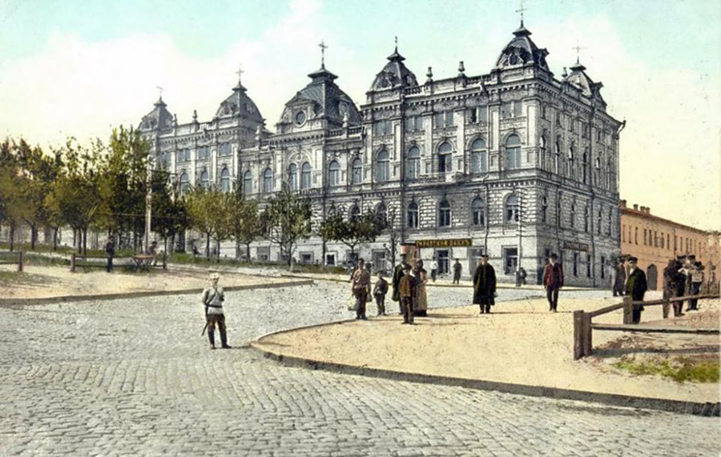

HISTORICAL INSIGHTS
Development of capitalism (end of XIX cent. - 1926)
In the beginning of 19th century the city had only 6389
inhabitants, in 1865 - 22,816, in 1887 - 48,000 and in 1897
the population had increased to 121,200 people. For the last thirty years of the century the population of the city increased 5 times. What was reason for such a population boom?

Two men: the Englishman Mr. John Hughes (who developed
the Donetsk coal deposits) and Ukrainian Alexandr Pol', who
opened the Kryvyi Rih iron ores. He found ore casually in 1866
while involved in archaeological research. The Donetsk coal
was necessary for melting the pig-iron of Kryvyi Rih ore and
there was a need for a connecting railway. It wasn't until 1881
that the sanction for its construction was received and in 1884
it began to work. The constant metal bridge through Dnieper was
opened. From this moment the city began to grow quickly.
New settlements appeared: Amur, Nizhnedniprovsk and the
factory areas developed. In 1897, because of the development
of the city, third in the Russian Empire, Yekaterinoslav opened
the electrical tram... In 1899 the High Mining School was open
and by 1913 it had grown to be the Mining Institute.
The end of 1905 was filled with anti-tsar revolts. The atmosphere
in society was heated. After the revolution of 1917 and the
subsequent Civil War the city was dominated by ruin and
an infinite change of authorities for some years. All this resulted
in a paralysis of industry and transport.
During eight months of 1918, in the period of Hetman (the Chairman of Ukraine),
under the decree of Hetman Pavlo Skoropads'kyi, the city was
called Sicheslav. In 1926 the city of Yekaterinoslav was renamed - Dnipropetrovsk
had appeared.... The Dnipropetrovs'k city name consists of two
words: "Dnipro" (the Dnieper River) and "Petrovsk" (named for
Petrovsky). Grigoriy Petrovsky (1878-1958) was the first
Parliament (Soviet) leader of the new communist Ukrainian
republic.
19 May 2016 the city was renamed in Dnipro by the law of
"Decommunisation of Ukraine".

{kind=link}
{kind=link}
{kind=link}
{kind=link}
{kind=link}
{kind=link}
{kind=link}
{kind=link}
{kind=link}
{kind=link}
{kind=link}